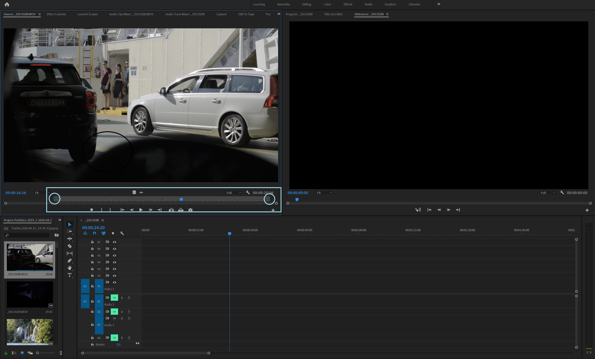
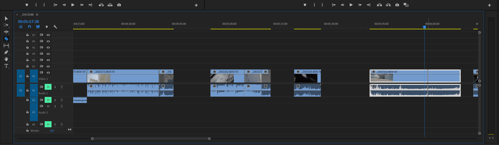
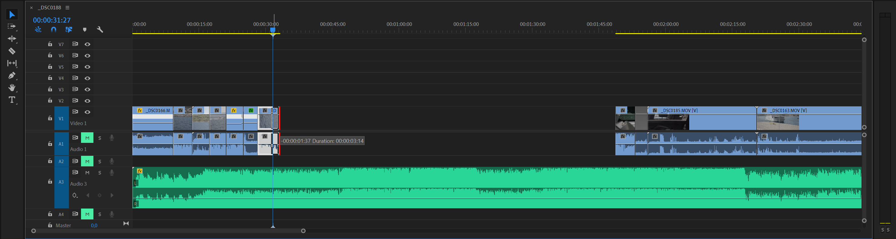
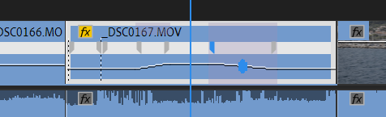
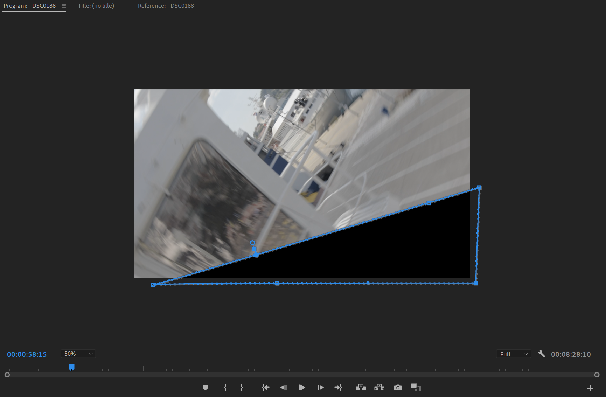
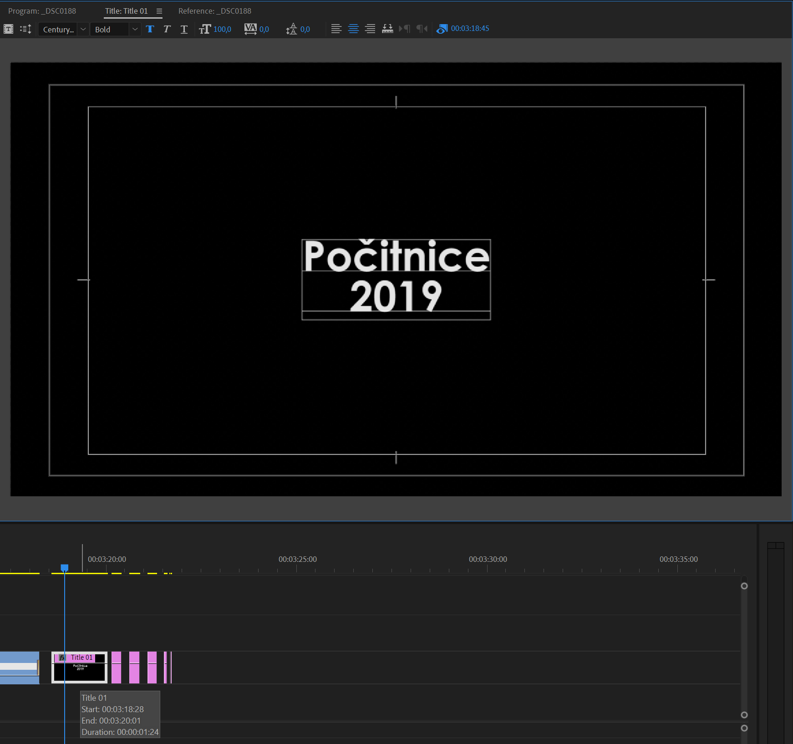
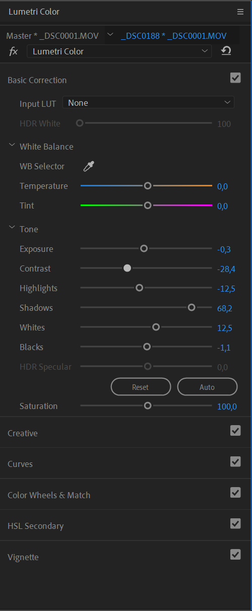
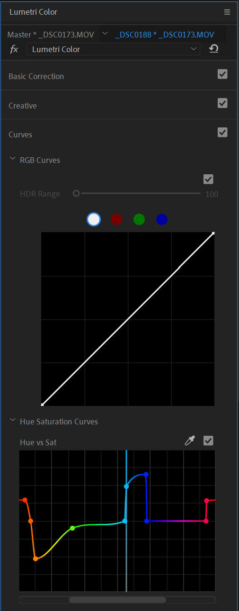
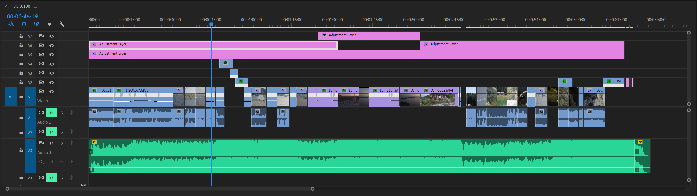

Potek urejanja - workflow
Tukaj bom opisal, kako urejam videoposnetke in kako sem uredil tudi tega.
-
Najprej sem šel čez vse posnetke in na približno izrezal dele, ki so mi zdeli uporabni.

Označena je časovna vrstica - v njej izrežem posnetek na željeno dolžino, tako da ponetek ustavim na mestu, in s klikom na tipko I ali O določim začetno ali končno točko (označene z krogi). Te posnetke prenesem na časovnico.
-
Še enkrat sem šel čez vse izbrane posnetke in začel določati približen vrstni red posnetkov. Poiskal sem tudi posnetke, pri katerih sem prehode načrtoval v naprej, in jih postavil tako, da so se malo prekrivali na pravih mestih.

-
Izbral sem glasbo, in spremenil dolžino posnetkov, da so prehodi ali dogodki singronizirani z glasbo.

-
Uredil sem hitrost posnetkov, tako, da so bili prehodi bolj gladki.

Pri posnetkih, ki sem jih prej prekril zem zdaj z pomočjo maske naredil del posnetka prosojen, in tako manj opazno združil posnetka, oz. naredil prohod.

-
Dodal in oblikoval sem končni napis.

-
Popravil sem barvo slike z pomočjo Lumetri colour, nato pa dodal Adjustment layer, ki sem ga razvlekel čez vse video posnetke. Na njem sem spremenil barve slike, da sem dobil željeni rezultat.



-
Na koncu sem še stabiliziral nekaj posnetkov s pomočjo efekta Warp stabiliser.